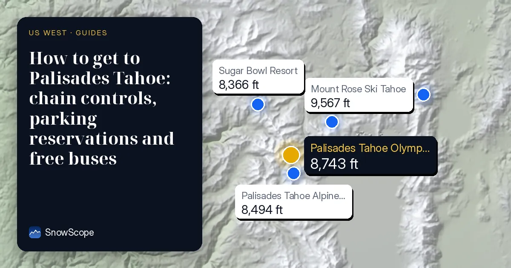

How to get to Palisades Tahoe: chain controls, parking reservations and free buses
Palisades Tahoe Olympic Valley, on Lake Tahoe's north-west shore, draws skiers from Reno, Sacramento and the Bay Area. Your winter journey hinges on two things: California's chain control rules when snow falls, and the parking reservations the resort requires on busy weekends and holidays.
See the live snow forecast for Palisades Tahoe Olympic Valley in the SnowScope appSnow depth, powder alerts and the 3D map, free.

Three hours from the nearest airport city
Reno is the closest gateway: about 42 miles (68 km) south-west. Sacramento lies 96 miles (154 km) to the west, and San Francisco 196 miles (315 km) further. The Village at Palisades Tahoe sits at 1960 Olympic Valley Road; Alpine Meadows base has its own entrance on Alpine Meadows Road. Most drivers head over Donner Summit, where winter traffic slows sharply on storm days.
The drive time from Reno is usually around three hours in clear conditions, but snow and chain control checkpoints can double that. Leave early on the forecast day and check Caltrans QuickMap for road status, closures and chain controls before you go.

What R-1, R-2 and R-3 mean when snow falls
Caltrans posts chain control levels on roadside signs as snow arrives. R-0 means no controls. R-1 requires chains on all vehicles except passenger cars and light trucks under 6,000 lb that have snow tyres on at least two drive wheels; those vehicles must still carry chains in the car. R-2 means chains or traction devices on all vehicles except those with four-wheel or all-wheel drive and snow-tread tyres on all four wheels, which must have devices in the vehicle. R-3 demands chains on every vehicle, with no exceptions; roads often close before R-3 is posted.
The signs and Caltrans or CHP staff at the checkpoint always have the final say. Radio reports can lag behind actual conditions. On heavy snow days, trucks are held or turned back at the checkpoints, which delays all traffic behind them. Build extra time into your schedule on storm days.
Before you leave: road checks and timing
Caltrans QuickMap is the official source for chain controls, closures and current conditions on SR-80 and other mountain routes. Check it before you leave home, then check again from the road if the journey takes longer than expected. On busy powder days, the checkpoint queues can stretch for miles, especially if snow is still falling.
Leave early: not for comfort, but to avoid being stuck in a slow queue or facing a closure that leaves you stranded overnight. If you see R-2 or higher already posted, consider whether the day is worth the drive.
Parking: book ahead or use the free buses
Parking reservations are required on Saturdays, Sundays and all holiday periods. The resort offers both free and paid slots, but you must book before you arrive. On busy weekends without a reservation, you will not get a spot.
Free alternatives exist. Tahoe Area Regional Transit (TART) runs free buses every day from Truckee and Tahoe City to Olympic Valley. The Mountaineer, a free on-demand shuttle, connects different parts of the valley. On a storm day when the drive is stressful and parking is full, the bus solves both problems: you skip the checkpoint queue and the parking lot.
Snow patterns through the season
Palisades Tahoe sits in a range where snow is reliable but varies month to month. Mid-mountain (7,470 ft / 2,277 m) sees a typical season peak of about 80 in (202 cm), with snow on the ground on roughly 190 days of an average winter. November usually brings little snow at the base but up to 49 in (126 cm) higher up in one winter out of ten. December and January bring heavier accumulation, and March is the deepest month overall.
The best week historically is week 10 (early March), when mid-mountain sits at a median depth of about 65 in (163 cm) in nine out of ten winters. Last winter (2025–26) peaked at 65 in (166 cm) at mid-mountain with 120 snow days. Early in the season, snow cover can be thin and rocky sections may show through; rocks buried under shallow snow are a hazard.
Avalanche safety when you leave the resort
If you plan to ski or hike outside the resort boundary, check the Tahoe area avalanche forecast first. The avalanche.org portal publishes daily forecasts. Even short off-piste ventures require an avalanche transceiver, probe and shovel, and the knowledge to use them. Never go alone, and never without checking the bulletin.
Tips for skiers
- Check Caltrans QuickMap and the weather forecast before you leave home. On storm days, leave very early or stay home.
- Carry chains even if you have four-wheel drive: R-2 controls require them in the car.
- Book parking reservations well ahead for weekends and holidays. Without one, you will not find a space.
- Use the free TART bus from Truckee or Tahoe City if the forecast shows heavy snow. It avoids both the chain queue and the parking lot.
- Before going off-piste, read the Tahoe avalanche forecast and go with others who have the right gear and training.
About these numbers
Resort snow depths are the deepest snow on the resort's upper slopes on the date shown; they are estimates for an area, not a measurement at one point. Forecasts can change. Always read the official avalanche bulletin before going off-piste.
Official avalanche bulletins: avalanche.org (US national portal)
Cite this report
For research, teaching or the press: the numbers and charts are free to reuse under CC BY 4.0 with this citation.
SnowScope (2026), How to get to Palisades Tahoe: chain controls, parking reservations and free buses, https://snowscope.app/blog/en/2026/11/how-to-get-to-palisades-tahoe-chain-controls-parking.html, accessed 2026-11-09
SnowScope (Atlas Labs). (2026, November 9). How to get to Palisades Tahoe: chain controls, parking reservations and free buses. SnowScope snow reports. https://snowscope.app/blog/en/2026/11/how-to-get-to-palisades-tahoe-chain-controls-parking.html
BibTeX
@misc{snowscope2026howtogettopalisadestahoe,
author = {{SnowScope (Atlas Labs)}},
title = {How to get to Palisades Tahoe: chain controls, parking reservations and free buses},
year = {2026},
month = nov,
howpublished = {\url{https://snowscope.app/blog/en/2026/11/how-to-get-to-palisades-tahoe-chain-controls-parking.html}},
note = {Published 2026-11-09 18:01 UTC; accessed 2026-11-09}
}· CC BY 4.0 · Methods, data and tools →
Palisades Tahoe Olympic Valley: snow and temperature by height, this winter vs last (tools) →
Follow Palisades Tahoe Olympic Valley
Free: a message when fresh snow is coming, and the forecast every morning.
More snow reports

Alta's mid-mountain usually peaks near 109 in (276 cm). Our 46-winter snow history answers when to come, which height suits you, and why the road matters. Data from 2026-11-07.

Vail in numbers: a usual peak of about 64 in (162 cm) at mid-mountain over 46 past winters, March the deepest month, plus terrain, access and safety.

Plan Mammoth Mountain by season: about 93 in (235 cm) at the usual peak at mid-mountain over 46 past winters, March deepest, long springs, and winters that swing.